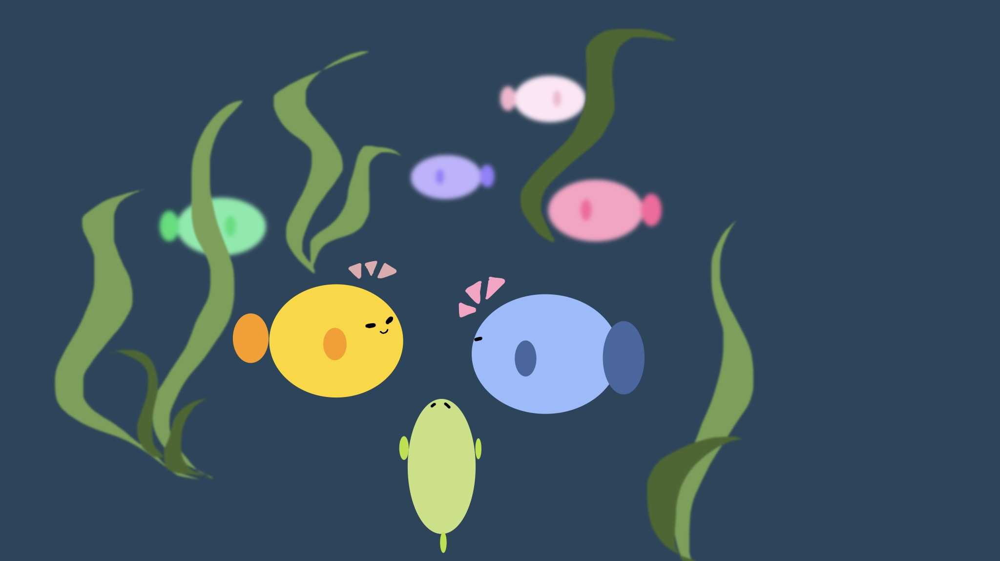
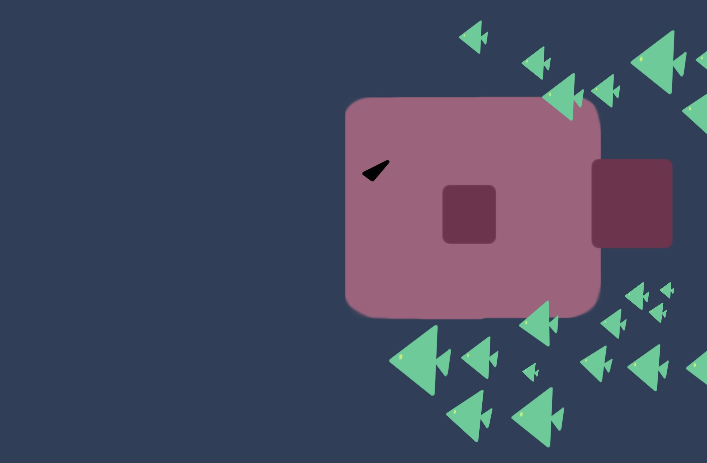
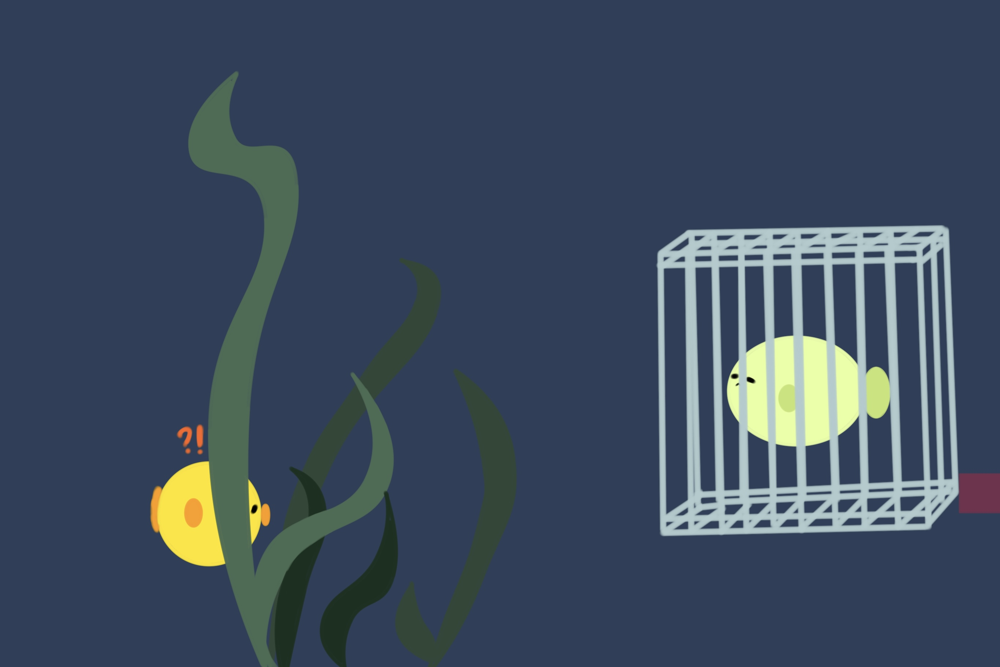
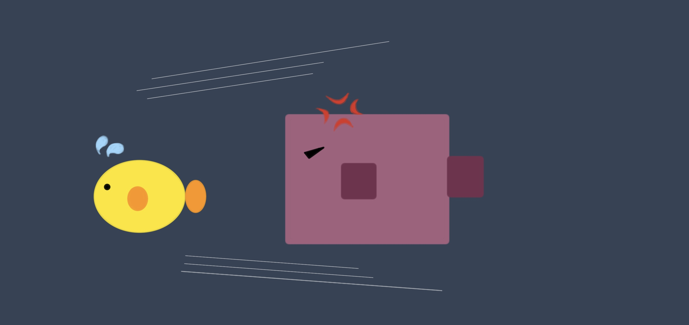
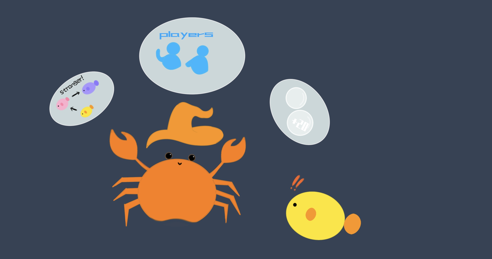
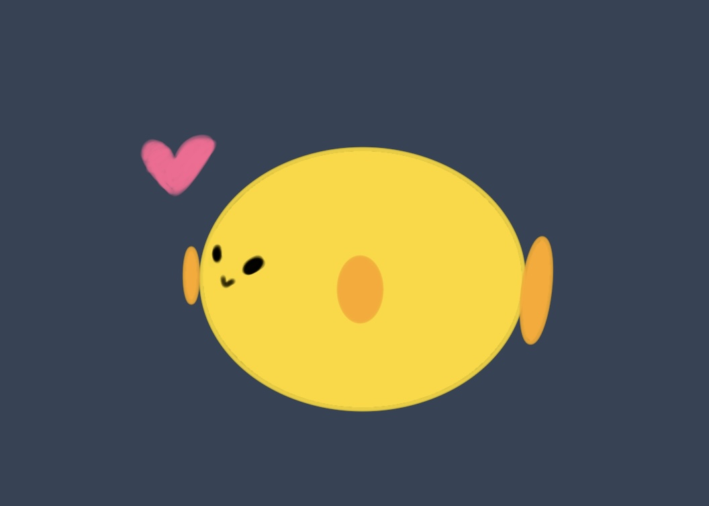

The little fish once lived happily with many other fish in these waters
However, one day, a big pink fish from another planet invaded and took over with its men
The peace and harmony of life was broken
Luckily, the little fish escaped undetected by hiding among the seaweeds
He was sad and determined to get his home back
But once the big pink fish spot him, he would chase him and wanted to hurt him
The little fish could't beat the big pink fish, he was very upset. He did't know what to do
A traveling crab magician passed by one day
The little fish happened to meet him and asked him for advice
Knowing the little fish's sad situation, the crab magician decided to help him
He connected us, the players who can help, with the little fish
He also gives the little fish magic, so that he can eat the small green fish
The more small green fish he eats, the stronger he becomes
He gradually doesn't need to be afraid of big pink fish
When he eats enough small green fish, he would becomes strong enough and can beat the big pink fish
Before the crab magician left, he created some magic bubbles to help the fish become stronger
As players, we can see a larger area of the environment than the little fish, and instruct him to eat the small green fish and avoid the big pink fish that is pursuing him
We can do it!
